Sesión 1:
Firma, aprovisionamiento y
distribución de apps¶
Introducción¶
En la sesión de hoy estudiaremos los elementos que proporciona la plataforma iOS para:
- Ejecutar apps en dispositivos reales.
- Configurar perfiles de aprovisionamiento en el Programa de
Desarrollo de la Universidad que nos permitan:
- Distribuir nuestras apps en dispositivos de prueba.
- Utilizar APIs de los servicios de iOS no disponibles en la cuenta de desarrollador gratuita.
- Probar y distribuir apps de iOS usando Test Flight y App Store Connect.
Seguridad en las apps¶
La seguridad es uno de los elementos fundamentales de la plataforma iOS. En concreto, el sistema de instalación y ejecución de apps en dispositivos reales contempla la necesidad de que las apps se ejecuten de forma segura y sin comprometer la integridad de la plataforma, eliminando virus, malware o ataques no autorizados.
El documento iOS Security Guide detalla todos los elementos que conforman la seguridad de la plataforma. Uno de los elementos más críticos de la arquitectura son las apps.
Para garantizar la autoría del desarrollador y la no modificación del código, todo el código ejecutable que se ejecute en un dispositivo iOS debe haber sido firmado con un certificado generado por Apple. Para obtener un certificado, los desarrolladores deben registrase en el Apple Developer Program.
A diferencia de otras plataformas móviles, iOS no permite que los usuarios instalen de páginas web apps no firmadas, potencialmente maliciosas. Tampoco permite ejecutar código no fiable.
Cuenta de desarrollador de Apple¶
Distintos programas de desarrollo¶
Apple define varios tipos de programas de desarrollo:
- Programa gratuito
- Programa de desarrollador de Apple (Apple Developer Program) - $99 al año
- Programa de desarrollador de empresa (Apple Developer Enterprise Program) - $299 al año
Si sólo queremos empezar a desarrollar y probar apps en nuestro dispositivo iOS basta con darse de alta de forma gratuita en el member center de Apple con un Apple ID.
El programa de pago de desarrollador de Apple permite utilizar funcionalidades avanzadas, distribuir apps a dispositivos de prueba o subir nuestra app al App Store.
El programa de desarrollador de empresa permite distribuir apps in-house, en los dispositivos del personal de la empresa, sin necesidad de usar el App Store.
Además de los anteriores programas, Apple ofrece el denominado iOS Developer University Program orientado a la formación en iOS en la universidad, que permite acceder a funcionalidades intermedias entre el programa gratuito y el programa de pago.
Este programa permite utilizar servicios de Apple no disponibles en el programa gratuito y ejecutar apps en dispositivos registrados, no solo en el dispositivo de desarrollo.
Dependiendo del rol es posible acceder a distintas opciones. Hay dos
tipos de roles principales: Admin (administrador de la organización)
y Member (miembro de la organización).
La Universidad de Alicante participa en este programa y probaremos sus características.
En concreto, las características de cada uno de los programas se muestra en la siguiente tabla https://developer.apple.com/support/compare-memberships/:
Cuenta de desarrollador¶
Para darse de alta como desarrollador de Apple es necesario dar de alta un Apple ID y definir una autenticación de doble factor.
Con esta forma de autenticación activada, cada vez que intentes acceder a tu cuenta desde un nuevo dispositivo tendrás que introducir un código de autorización que se envía a tus dispositivos autorizados en los que estás logeado.
También es posible recibir un código de autorización en un teléfono móvil que deberás proporcionar en tu registro.

Una vez dados de alta como desarrolladores de Apple podremos acceder a la cuenta de desarrollador, en la que podremos gestionar numerosos elementos que veremos durante el curso.

También tenemos acceso al portal de gestión de nuestras apps, el App Store Connect desde donde gestionar recursos relacionados con nuestro equipo de desarrollo y prueba, así como preparar las apps para su distribución en la App Store.
Equipo de desarrollo¶
En todos los programas de pago de desarrollador de Apple, incluso en los programas individuales, es posible trabajar con un equipo de desarrolladores.
Cuando se da de alta un programa de desarrollo se crea un identificador de equipo único (Team ID) que compartirán todos los desarrolladores del equipo. Se puede consultar el identificador de equipo en la opción Membership de la cuenta de desarrollador.
Se pueden añadir desarrolladores al equipo desde el App Store Connect, en la opción de Usuarios y Acceso.

También es posible configurar los permisos de los desarrolladores del equipo para que puedan subir apps o probarlas como testers en Test Flight.
Demo¶
Veremos una demostración en la que accederemos a la cuenta de desarrollador y al App Store Connect usando distintos perfiles:
- Perfil gratuito (domingo.gallardo.appledev2@gmail.com)
- Miembro de la cuenta de la universidad (domingo.gallardo.appledev1@gmail.com)
- Administrador de la cuenta de la universidad (domingo@dccia.ua.es)
- Perfil de pago (domingo@dccia.ua.es)
Certificados¶
Código firmado¶
Para poder tanto ejecutar una app en un dispositivo físico como distribuirla en el App Store es necesario firmar su código digitalmente.
La firma digital del código (code signing) permite al sistema operativo identificar quién ha firmado la app y verificar que no se ha modificado desde el momento de su firma. El código ejecutable está protegido por la firma y ésta se invalida si el código cambia. Los recursos de la app como ficheros nib o imágenes no están firmados.
En tiempo de ejecución, el sistema iOS comprueba el código firmado de todas las páginas ejecutables de memoria cuando se cargan, para asegurar que la app no ha sido modificada desde que fue instalada o actualizada por última vez.
Para poder firmar una app es necesario instalar un certificado proporcionado por Apple que proporciona la clave privada con la que se realiza la firma.
Identidad de firma¶

Una identidad de firma (signing identity) consiste en una pareja de clave pública y clave privada que proporciona Apple en el certificado de desarrollador.
El certificado se almacena en el llavero de inicio de sesión del Mac en el que se realiza el desarrollo (se puede consultar con la aplicación Acceso a llaveros) y en la cuenta de desarrollador de Apple.
La clave privada se usa para firmar la aplicación. La clave pública del certificado determina la identidad del desarrollador. La mantiene Apple en el centro de desarrollador y se guarda en los perfiles de aprovisionamiento del equipo de desarrollo.
Se necesita también un certificado intermedio proporcionado por Apple. Cuando instalas Xcode este certificado intermedio se guarda en el llavero.
Es muy importante conservar segura la clave privada, como si fuera una contraseña de una cuenta. Debes mantener una contraseña segura de tu pareja clave pública-privada. Si se pierde la clave privada, tendrás que crear una identidad completamente nueva para firmar el código. O peor aún, si alguien se hace con tu clave privada puede hacerse pasar por ti e intentar distribuir una app con código malicioso. Esto podría hacer que Apple revocara tus credenciales de desarrollador.
Tipos de certificados¶
Existen varios tipos de certificados: de desarrollo, de distribución, para el servidor de notificaciones push, etc. El certificado de desarrollador permite ejecutar aplicaciones en un dispositivo. El de distribución permite enviarla al App Store.
Los certificados de desarrollo identifican a una persona del equipo. Los certificados de distribución identifican al equipo y pueden ser compartidos por los miembros del equipo que tienen permiso para enviar apps al store.
Todos los certificados son proporcionados por Apple.
Para comprobar el tipo de certificado podemos consultar el member center, Xcode o Acceso a llaveros.
Gestión de los certificados en Xcode¶
Xcode mantiene nuestra identidad (Apple ID) y nuestros certificados.
En el caso de pertenecer a más de un programa de desarrollo (por ejemplo al programa educativo de la UA y a nuestro programa personal) Xcode muestra las dos identidades y nos permite utilizar la que nos interese en cada momento.

Creación e instalación de certificados¶
Es posible generar e instalar manualmente los certificados, pero es más sencillo dejar que sea Xcode quien los gestione.
Al firmar una aplicación por primera vez, Xcode se descarga de los servidores de Apple e instala automáticamente el certificados de firma.

Ejecución de apps en dispositivos reales¶
Para la instalación y ejecución de una app iOS en un dispositivo físico es necesario realizar una configuración del target (binario que se instala en el dispositivo) que incluye múltiples procesos:
-
Firma digital del binario con un certificado del desarrollador proporcionado por Apple (Signing Certificate).
-
Instalación de un perfil de aprovisionamiento (Provisioning Profile) correcto que determina, entre otros: servicios de la plataforma Apple a los que la app puede acceder (capabilities y entitlements) y dispositivos concretos (IDs) autorizados en los que puede ejecutarse la app (lo veremos más adelante).
Xcode facilita la realización de todos estos procesos.
El resultado de estos procesos es un fichero binario .ipa firmado digitalmente.
La forma habitual de instalar una app en un dispositivo iOS es descargándola del App Store. Pero también existen formas alternativas, para el caso de dispositivos de prueba o apps distribuidas internamente en una empresa (in-house). En estos casos es posible instalar las apps desde Test Flight, desde una web o con el programa de MacOS Apple Configurator 2.
Resumiendo las distintas condiciones posibles, un dispositivo iOS puede ejecutar una app si:
- El dispositivo es un dispositivo de desarrollo inicializado por Xcode.
- El dispositivo tiene instalado un perfil de aprovisionamiento aprobado por el usuario, que contiene el UUID del propio dispositivo y el certificado contiene la clave pública del desarrollador que ha firmado la app.
- Se trata de una versión beta de la app que se ha instalado con Test Flight.
- El dispositivo tiene instalado un perfil de aprovisionamiento aprobado por el usuario y la app está firmada con un certificado de empresa proporcionado por Apple.
- Proviene del App Store y está firmada con un certificado de distribución en el App Store.
Demo¶
Vamos a demostrar cómo firmar una app y cómo ejecutarla en un dispositivo autorizado por Xcode.
Instalación de la identidad de firma¶
Una vez creado el Apple ID, Xcode facilita el proceso de generación de nuestra identidad de firma y de nuestro certificado de desarrollador.
Escogemos Xcode > Preferences y pinchamos en el signo + para añadir Apple ID.
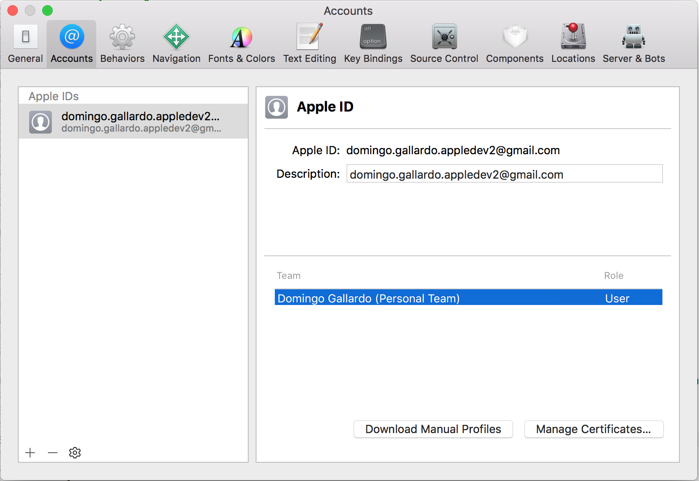
Si todo ha ido bien, Xcode mostrará la información de nuestro perfil gratuito.
Firma de una app¶
Para firmar una app con Xcode debemos seleccionar el proyecto completo, el target y, en el apartado General, rellenar el bundle ID de la app y seleccionar tu identidad de firma en la opción Signing.
El bundle ID debe ser un identificador único. Si utilizamos uno que ya se ha usado Xcode indicará un error. Podemos utilizar nuestro nombre de login, seguido de un punto y del nombre de la app.
App ejemplo ToDoList¶
Vamos a utilizar una app ya codificada para probar todos los conceptos de esta sesión. Se trata de una app muy sencilla, con la que podemos gestionar una lista de tareas por hacer.

Podemos descargar la app de esta dirección y probar a ejecutarla en el simulador.
Estando en el programa de desarrollo gratuito podemos probar la app en nuestro móvil de desarrollo. Para ello es necesario firmar el código compilado de la app con el certificado de desarrollador que acabamos de obtener.
Al firmar la app, Xcode creará automáticamente el certificado de desarrollador.

Comprobación del certificado¶
En la pantalla de Xcode > Preferences... > Accounts pulsamos Manage Certificates... para comprobar el certificado recién creado.
Podemos gestionar los certificados (crear nuevos, exportar, importar, examinar) desde esta pantalla. Podemos encontrar más información en el manual de Xcode.

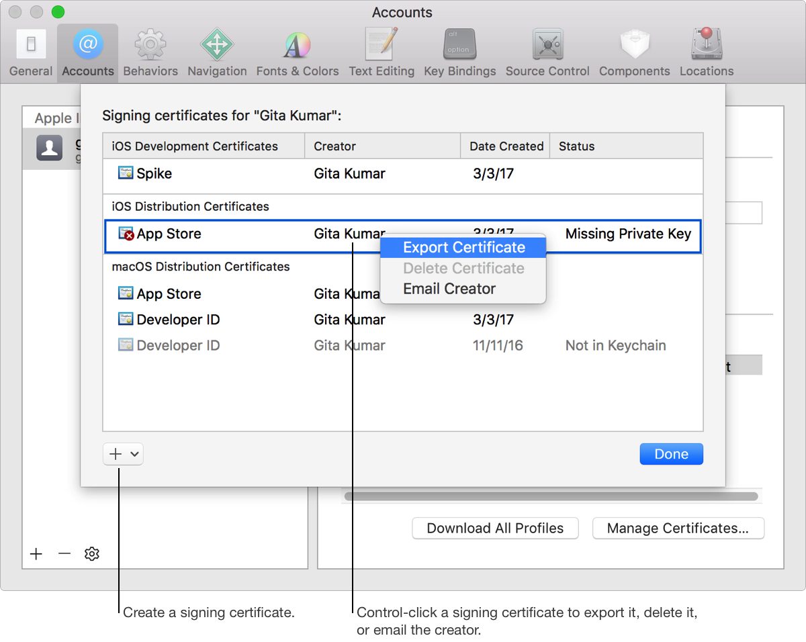
Comprobación de la identidad de firma en Acceso a Llaveros¶
En la aplicación Acceso a Llaveros y podemos comprobar que se ha instalado el certificado junto con la clave privada en Mis certificados e Inicio de sesión.
Conexión de un dispositivo real a Xcode¶
Conectamos un dispositivo iOS real al ordenador.
En Xcode seleccionamos Window > Devices para comprobar que se ha conectado correctamente. En esa ventana se puede acceder al identificador UUID del dispositivo.
Es posible activar la conexión inalámbrica al dispositivo.

Prueba en un dispositivo real¶
Seleccionamos el dispositivo en el menú de ejecución y ejecutamos para que la app se instale en el dispositivo.
Es posible desplegar y ejecutar la aplicación en el dispositivo de forma inalámbrica.

Autorización al desarrollador en el dispositivo¶
Al ser un dispositivo de prueba gestionado automáticamente por Xcode, debemos autorizar al desarrollador antes de poder lanzarse la app.
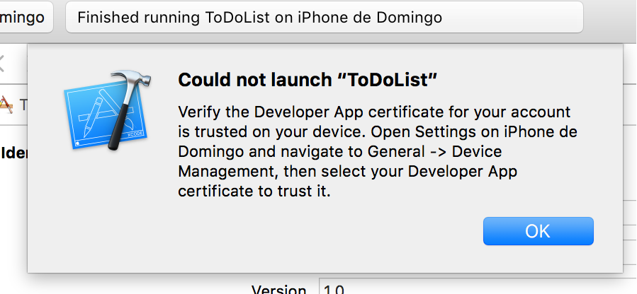

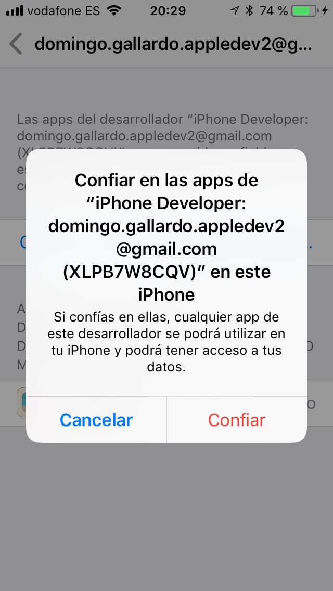
Archivo y distribución de la app¶
Seleccionando la opción de Xcode Product > Archive se accede al panel de archivo y distribución de la app
La opción de exportar la app está deshabilitado por que estamos registrados con el programa gratuito.
Cuidado
Para poder pulsar la opción Archive debe estar seleccionada la opción Generic iOS Device en el menú de ejecución. Si está seleccionado un modelo concreto de iPhone la opción Archive se deshabilita.

Despliegue de apps en dispositivos de prueba¶
Capacidades de las apps¶

Para poder utilizar servicios avanzados proporcionados por Apple en las apps (como notificaciones push, iCloud o Game Center) es necesario darse de alta de forma individual en el programa de desarrollo de iOS o formar parte de un equipo de desarrollo.
Para una lista completa de las capacidades disponibles según el tipo de desarrollador se puede consultar la documentación en Apple Developer > Support > Advanced App Capabilities.
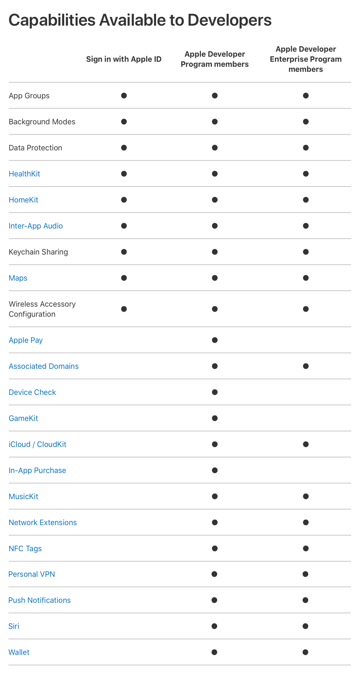
Con el programa de desarrollo de la Universidad podemos acceder a más servicios que a los gratuitos, pero no a todos los servicios disponibles. La lista de servicios accesibles son los siguientes:
Permisos para las apps¶
Un permiso (entitlement) es un elemento de configuración incluido en la firma digital de la app que le indica al sistema que permita a la app acceder a ciertos recursos o realizar ciertas operaciones.
La forma de otorgar los permisos a una app es algo elaborada, para permitir una configuración flexible y no atar los permisos a una única app.
El responsable de la cuenta de desarrollador debe crear un identificador denominado App ID y otorgar los permisos a ese identificador.
Bundle Identifier¶
Un bundle ID identifica de forma única una app.
La cadena de bundle ID debe contener únicamente caracteres
alfanuméricos (A-Z,a-z,0-9), guiones (-), y puntos (.). La cadena
debería estar en un formato DNS-inverso y usar un dominio propio de la
organización. De esta forma se garantiza su unicidad. Por ejemplo, si
el dominio de la organización es Acme.com y creamos una app llamada
Hola podríamos usar como bundle ID de la app la cadena
com.Acme.Hello.
Uso del Bundle ID¶
Se utiliza durante el desarrollo para aprovisionar dispositivos y por el sistema operativo cuando la app se distribuye a los clientes. Por ejemplo, los servicios de Game Center o de compras In-App usan el bundle ID para identificar la app cuando utilizan estos servicios.
App ID¶
El App ID es un patrón de texto que da permiso a un único bundle ID (identificador de la app) o a un conjunto de ellos. Un App ID define una lista de capacidades (whitelist) que permitimos usar a una app (explicit App ID) o varias apps (wildcard App ID).
El App ID se puede crear de forma automática desde Xcode o manualmente desde la propia cuenta de desarrollo.
Todos los App IDs creados se guardan en el member center. Los que crea Xcode de forma automática tienen en su nombre el prefijo XC.
Por ejemplo, podríamos crear el App ID es.ua.mastermoviles.icloud.*
con permiso de acceso a iCloud y todos los bundles ID que tengan
este prefijo podrán acceder al servicio.
Una vez creado, el App ID se instala en un perfil de aprovisionamiento que permite que una o más apps desarrolladas por el equipo accedan a los permisos otorgados.
En el caso de un desarrollador individual los permisos se gestionan automáticamente desde Xcode, que es quien se encarga de crear el App ID y otorgarle los permisos necesarios.
La cadena del APP ID contiene realmente dos partes separadas por un punto: el prefijo, que es el Team ID, y el sufijo que es la cadena de búsqueda del bundle ID propiamente dicha.
Gestión de las capacidades en Xcode¶
En Xcode se deben indicar las capacidades que necesita la app que estamos desarrollando.
Para ello debemos seleccionar el target y la opción Capabilities. Dependiendo del programa de desarrollo en el que estemos tendremos más o menos capacidades disponibles.
Una vez seleccionadas las capacidades que necesitamos, Xcode busca en el member center algún perfil de aprovisionamiento con un App ID que empareje el bundle ID y que satisfaga estas necesidades. Si no existe ninguno, crea el App ID y el perfil de aprovisionamiento de forma automática. El App ID lo registra en la cuenta de desarrollo. Sólo lo puede hacer si somos administradores.
Aprovisionamiento de apps¶
Es necesario configurar un perfil de aprovisionamiento para que la app pueda acceder a servicios de la plataforma Apple (como almacenamiento iCloud, mapas, compras In-App o notificaciones push) y para configurar dispositivos de prueba en los que podamos ejecutar la app.
Con la cuenta de desarrollador gratuita es posible desarrollar aplicaciones, acceder a un número limitado de servicios de Apple y probarlas configurando el dispositivo propio como un dispositivo de desarrollo. Pero es una forma muy limitada de prueba porque es necesario conectar físicamente el dispositivo al ordenador en el que está Xcode.
Es posible ejecutar apps en dispositivos de prueba sin tener que configurarlos como dispositivos de desarrollo usando perfiles de aprovisionamiento. Esto solo es posible si tenemos una cuenta de pago de desarrollador o si estamos en un equipo con una cuenta. En nuestro caso usaremos la cuenta del programa de desarrollo de la universidad.
Distribución de apps¶
La forma de distribuir apps en la plataforma iOS es la App Store. Para enviar una app al App Store es necesario haberse registrado en el programa de pago de desarrollador de Apple.
Apple proporciona un certificado de distribución necesario para subir la app al App Store. De esta forma, todas las apps en el App Store han sido enviadas por una persona o una empresa conocida.
Las apps enviadas son revisadas por Apple para asegurarse de que funcionan tal y como se describe y que no contiene bugs obvios ni otros problemas evidentes. Este proceso de curación da a los clientes confianza en las apps que compran.
Antes de distribuir la app en el App Store debemos haberla probada en dispositivos de prueba. Como ya hemos dicho, Apple permite ejecutar apps en dispositivos registrados mediante el uso de perfiles de aprovisionamiento.
Apple también permite distribuir una app de forma restringida, sólo a los dispositivos particulares de los empleados de una empresa. Para ello es necesario darse de alta en el Apple Developer Enterprise Program y utilizar también el perfil de aprovisionamiento apropiado.
Perfil de aprovisionamiento¶
Un perfil de aprovisionamiento (provisioning profile) es un fichero que contiene una colección de datos (claves públicas de certificados, permisos, UUIDs de dispositivos autorizados, etc.) que conecta desarrolladores y dispositivos a un equipo de desarrollo autorizado y que permite que un dispositivo sea utilizado para pruebas.
Un perfil de aprovisionamiento determina básicamente:
- Qué servicios puede utilizar una app.
- En qué dispositivos se pueden ejecutar la app.
Un perfil de aprovisionamiento contiene los siguientes elementos:
- App ID: nombre del perfil, cadena de búsqueda y servicios autorizados por el pérfil.
- Certificados de desarrolladores del equipo.
- Dispositivos: Nombre e identificadores de dispositivos.
Físicamente, los perfiles de aprovisionamiento son ficheros XML
encriptados. Los que usa Xcode se guardan en el directorio
~Library/MobileDevice/Provisioning Profiles. Si los borramos de esa
carpeta, automáticamente se borran de Xcode.
Es posible consultar su contenido desde el terminal con el comando:
1 | security cms -D -i <perfil>.mobileprovision |
También podemos visualizar su contenido con la vista previa del Finder:
Dispositivos de prueba en el perfil de aprovisionamiento¶
El perfil de aprovisionamiento de una app se incluye en el binario de la app (fichero .ipa) y se instala automáticamente en el dispositivo cuando se copia la app.
Para que la app se pueda ejecutar en el dispositivo, su UUID debe estar incluido en la lista de dispositivos autorizados del perfil. Además se deben cumplir las siguientes condiciones:
- El bundle ID de la app empareja el App ID del perfil.
- Los permisos solicitados por la app están otorgados en el App ID del perfil.
- La app está firmada por un desarrollador cuya clave pública está en la perfil de aprovisionamiento.

En combinación con el bundle ID, el perfil de aprovisionamiento (provisioning profile) y los permisos (entitlements) se usa para asegurar que:
- La app ha sido compilada y firmada por nosotros o por un miembro de confianza del equipo.
- Las apps firmadas por nosotros o por nuestro equipo se ejecutan sólo en dispositivos de desarrollo escogidos.
- Las apps se ejecutan únicamente en los dispositivos de prueba que especifiquemos.
- Nuestra app no está usando servicios que no hemos añadido al app.
- Sólo nosotros podemos enviar revisiones del app al store.
Instalación de la app en un dispositivo de prueba¶
Es posible instalar la app en el iPhone de prueba usando Xcode o Apple Configurator 2.
La aplicación Apple Configurator 2 permite configurar dispositivos, hacer copias de seguridad, añadir apps, etc. Contiene funcionalidades que se han extraído de iTunes.
La app se copia en el dispositivo junto con el perfil de aprovisionamiento (está incluido en el ipa). De esta forma, para ejecutar la app no es necesario autorizar el perfil del desarrollador.
Podemos instalar también el fichero ipa desde el panel de gestión de dispositivos de Xcode accesible desde la opción Window > Devices.
Allí también podemos comprobar el perfil de aprovisionamiento recién instalado.
Ejecución de apps en dispositivos no registrados¶
Existen dos tipos especiales de perfiles de aprovisionamiento que permiten que cualquier dispositivo (no solo aquellos que están registrados en el propio perfil) puedan ejecutar una app:
- El App Store Distribution Provisioning Profile que se utiliza para poder subir la app al App Store de Apple.
- El In-house Distribution Provisioning Profile que se utiliza para poder distribuir una app en la empresa y que debe tener un certificado de empresa de Apple.
Certificados de empresa¶
Los certificados de empresa de Apple han sido noticia recientemente debido a que Apple ha detectado malas prácticas en su uso por parte de Facebook y Google. Como castigo, Apple ha revocado los certificados durante un par de días. Durante ese tiempo, las apps in-house de esas compañías han dejado de funcionar.
El mal uso de Facebook y Google de estos certificados ha puesto al descubierto la existencia de una gran cantidad de sitios que hacen un uso fraudulento de los certificados de empresa de Apple para distribuir apps no permitidas en el App Store (de juego o pornografía) como si fueran apps in-house.
Demo¶
Resumen del flujo de trabajo¶
Es necesario firmar digitalmente la app para poder ejecutarla en un dispositivo y usar ciertos servicios como CloudKit, Game Center o compras In-App.
Los dispositivos que se usan para el desarrollo deben ser registrados y añadidos en el perfil de aprovisionamiento que uses para firmar la app.
Si seleccionamos la opción de firma automática en Xcode (es lo recomendado), Xcode crea estos elementos de forma automática. Si perteneces a un equipo, algunos de estos permisos deben ser configurados por el administrador del equipo en la web de desarrollador de Apple.
Pasos a seguir:
- Nos damos de alta al equipo de la universidad.
- El administrador del equipo de la universidad crea un App ID con ciertas capacidades y un perfil de aprovisionamiento con ese App ID, los dispositivos de prueba y los desarrolladores del equipo.
- Compilamos la app, añadimos las capacidades necesarias y la firmamos con la cuenta del equipo.
- Exportamos el fichero .ipa compilado de la app.
- Instalamos y ejecutamos la app en un dispositivo de prueba.
Equipo de desarrollo del programa de Universidad¶
La mayoría de opciones en el member center serán sólo accesibles para consulta. Será el administrador del equipo de la Universidad el que podrá cambiarlas.

Es necesario crear un nuevo certificado para el desarrollador, distinto del certificado individual. Servirá para firmar aplicaciones desarrolladas en el equipo en el que se ha añadido al desarrollador.
Se puede hacer desde el member center o desde Xcode. Será un certificado de tipo iOS App Development.
Para confirmar que se ha creado el nuevo certificado, podemos entrar en el member center o en la aplicación de Acceso a llaveros:

Firma de la app con el nuevo certificado¶
Para firmar la app con el nuevo certificado dejamos marcada la opción para que Xcode gestione automáticamente la firma. Seleccionamos el team Universidad de Alicante.
Aparecen los siguientes errores porque Xcode no puede realizar automáticamente las actualizaciones que necesita:
- La cuenta no tiene permisos suficientes para crear un perfil de aprovisionamiento.
- No existe perfil de aprovisionamiento aplicable al bundle ID de la app.
Es el administrador de la cuenta de la UA el que debe crear un perfil de aprovisionamiento para la app en el member center e incorporar en ese perfil el certificado del desarrollador.
Examinamos los perfiles de aprovisionamiento¶
Podemos examinar los perfiles de aprovisionamiento desde el Member Center o desde Xcode y el terminal
En el Member Center tenemos que entrar en la opción Certificates, Identifiers and Profiles para entrar en la página de gestión de los perfiles de aprovisionamiento.
Menú de opciones¶
Contiene todos los perfiles de aprovisionamiento creados, junto con la información asociada.
- Certificados: todos los certificados de los desarrolladores del equipo.
- Identificadores: todos los App IDs aprobados, con las características aprobadas en cada uno de ellos.
- Dispositivos: todos los dispositivos aprobados para probar las apps
Creación un App ID desde Member Center¶
Sólo se puede hacer con el rol administrador.
Dispositivos¶
Para añadir un dispositivo a un certificado de aprovisionamiento hay que añadir su UDID, Unique Device Identifier.
Cadena de 40 caracteres de símbolos alfanuméricos (a-z y 0-9).
Desde Xcode se puede obtener en la pantalla de Dispositivos (Window > Devices).
Se pueden registrar en el Member Center hasta 200 UDIDs para probar aplicaciones en desarrollo.
Creación de perfiles de aprovisionamento¶
Una vez creado el App ID con los permisos necesarios, añadidos los certificados de los desarrolladores del equipo y añadidos los dispositivos es posible crear un nuevo perfil de aprovisionamiento.
Se puede hacer desde el Member Center y también desde Xcode. Es más claro ver el proceso desde Member Center, ya que Xcode mezcla el proceso de creación del perfil con el de dar autorizaciones (entitlements) a la propia aplicación.
Nuevo perfil de aprovisionamiento desde Member Center¶
Firma de la app ToDoList con el perfil de aprovisionamiento creado¶
Una vez creado el perfil de aprovisionamiento ya es posible aplicarlo a la app. Basta con definir un bundle ID compatible con el App ID definido en el perfil.
En este caso, al haber definido un App ID único (sin el *) se define
como bundle ID el mismo.
El perfil de aprovisionamiento correspondiente se descarga automáticamente.
Selección manual del perfil de aprovisionamiento¶
Es posible seleccionar manualmente un perfil de aprovisionamiento del member center eliminando la opción de Xcode de gestión automática de la firma.
Capabilities¶
El perfil de aprovisionamiento que hemos creado permite 3 capabilities:
- Game Center
- In-App Purchase
- Keychain Sharing
Es posible activar cualquiera de estos servicios en la app, en el menú Capabilities.
Ahora este menú muestra más servicios posibles, al pertenecer al equipo de la UA:
Activación del permiso de Game Center¶
Si se activa el permiso de Game Center Xcode se asegurará e que el perfil de aprovisionamiento seleccionado proporcione este permiso. Si no es así aparecerá un error y el botón Fix Issue.
Es posible comprobar el error si se intenta activar el permiso Push Notificacions.
Xcode puede arreglar el error creando un nuevo perfil de aprovisionamiento y subiéndolo al Member Center. Para ello hay que tener permisos apropiados en la cuenta de desarrollador (ser un administrador del equipo en el caso de una organización o el propietario del equipo en el caso de un programa de desarrollo).
Exportar la app¶
Seleccionando en Xcode la opción Product > Archive ahora ya está activa la opción Export
Las opciones App Store y Ad Hoc no funcionan por no tener una cuenta de universidad permisos para subir apps al App Store. Se puede hacer con una cuenta de pago. En la opción Ad Hoc es posible definir una URL privada para descargar la app y probarla.
La única opción de exportación que funciona es Development, que permite distribuir la app a cualquier dispositivo incluido en el perfil de aprovisionamiento.
La opción de App Thining permite generar distintos ficheros ipa
adaptados a cada tipo de dispositivo, lo que minimiza el tamaño del
fichero. Si no se selecciona, se genera un único fichero ipa que
puede ejecutarse en cualquier dispositivo.
Tarda un buen rato en generar el fichero ipa (iOS App file).
El fichero generado es un binario que se puede instalar sólo en dispositivos autorizados en el perfil de aprovisionamiento.
Instalación y ejecución de la app¶
Probamos a instalar la app en un dispositivo autorizado usando Apple Configurator 2.
Distribución e instalación de betas online¶
Hemos visto que es posible ejecutar apps de prueba en dispositivos que estén dados de alta en el perfil de aprovisionamiento.
Pero la instalación de la app es un proceso algo tedioso: hay que conectar físicamente el dispositivo a un ordenador Mac y realizar la instalación mediante una aplicación auxiliar como Xcode o Apple Configurator 2.
Sería mucho más fácil si permitiéramos instalar la app desde el propio dispositivo (iPhone o iPad), descargándola de una web o de alguna app de configuración.
Esto es lo que se consigue con la aplicación TestFlight de Apple (lo veremos más adelante). Pero este servicio sólo está disponible para apps enviadas al App Store. Es necesario para ello una cuenta de pago.
Existe una solución intermedia: seguir usando la distribución al equipo de desarrollo mediante el alta de los dispositivos en el pefil de aprovisionamiento, pero usar un servicio que facilite la instalación de la app en esos dispositivos.
Es lo que se consigue con servicios como el que vamos a ver: Fabric.
Fabric¶
Fabric es una plataforma y API que permite una gran cantidad de funcionalidades: distribución, recopilación de datos de crashes, recopilación de estadísticas de uso, etc.
Se trata de una plataforma creada por Twitter y comprada por Google en enero de 2017. Se puede acceder desde esta URL.
En este año 2019 Google realizará la integración del servicio en Firebase.
Demo¶
Alta y descarga de Fabric¶
Debemos registrarnos en Fabric con nuestro correo electrónico y nuestro nombre. Escribimos como nombre de la organización nuestro propio nombre.
Hay entrar en el dashboard y descargar e instalar la aplicación para Mac, moviéndola a la carpeta de Aplicaciones. La última versión es la 2.7.5.
Una vez descargada, hay que registrarse en la aplicación en ella con la misma cuenta y contraseña que en la web.


Instalación de Fabric¶
La aplicación Fabric nos guía paso a paso:
Debemos seleccionar el proyecto XCode y añadir un Run Script Build Phase.
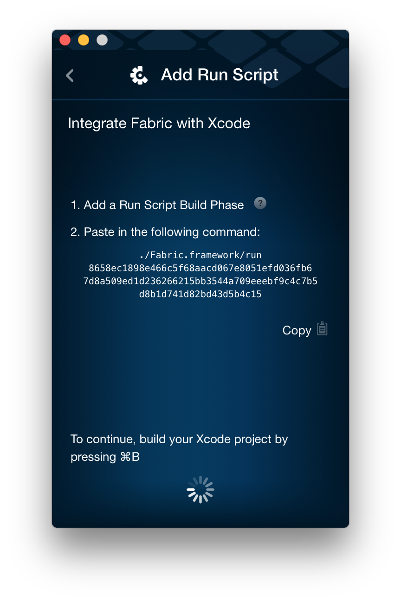
Se selecciona en Xcode Build Phases y en el símbolo + se selecciona New Run Script Build Phase.
En la opción Run Script se pega el código que aparece en la aplicación.
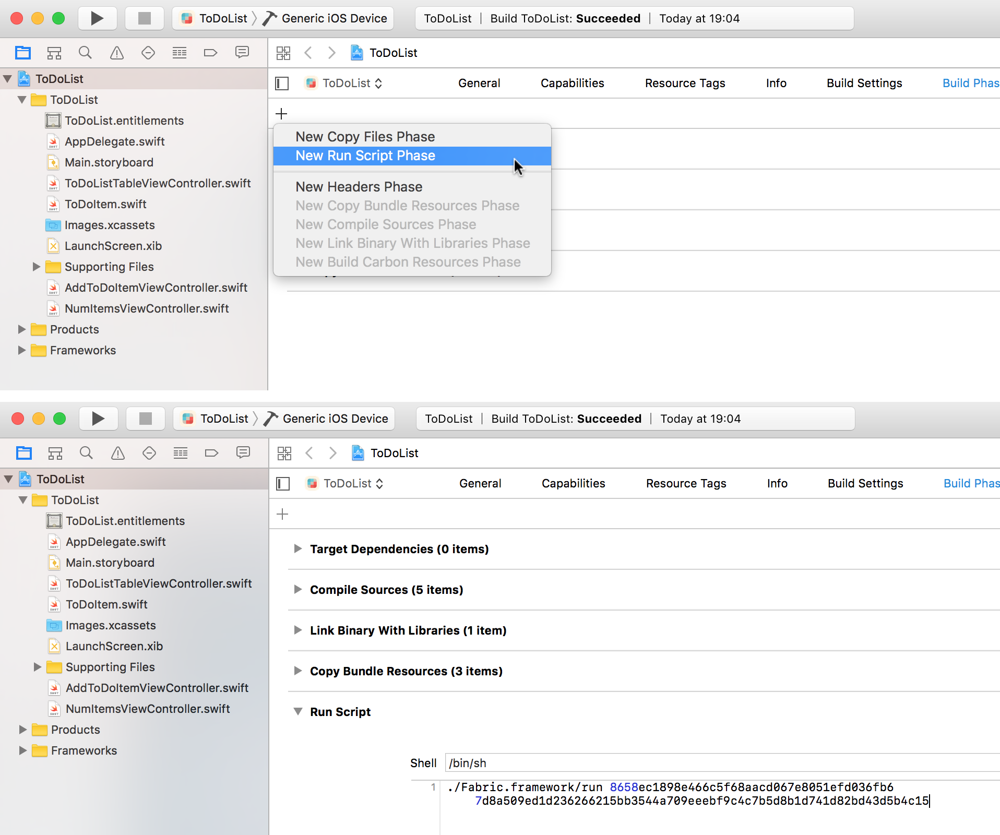
Compilamos la aplicación con la opción Product > Build.
Se instala el SDK Kit en el proyecto, arrastrando desde la aplicación al proyecto.

Debemos copiar el código indicado en el fichero AppDelegate.swift.

Y volvemos a compilar la aplicación y la ejecutamos en el simulador. La aplicación de Fabric detectará que la hemos lanzado y aparecerá una pantalla indicando que todo ha ido correctamente.
También recibiremos un correo electrónico indicando que la app ya se ha subido y está disponible para su distribución.
Distribución a probadores¶
Debemos seleccionar en Xcode la opción de Product > Archive.
Cuidado
Recuerda que para habilitar la opción Archive debe estar seleccionada la opción Generic iOS Device en el menú de ejecución. Si está seleccionado un modelo concreto de iPhone la opción Archive se deshabilita.
Automáticamente la app aparecerá en la aplicación de Fabric.
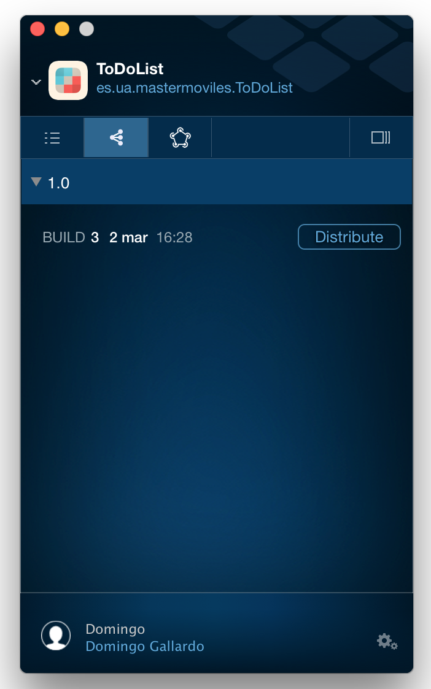
Podremos activar la distribución, añadiendo los correos electrónicos de las personas a las que se les enviará.

Si el UUID del dispositivo del probador está incluido en el perfil de aprovisionamiento podrá ejecutar la app sin problemas. Si no, Fabric obtendrá el UUID y nos lo proporcionará para que actualicemos el perfil de aprovisionamiento.
Ejecución de la app por el probador¶
El probador recibe un e-mail que le dirige a una página web desde la que debe instalar un perfil (que será el que permitirá leer el UUID del dispositivo y comprobar si está incluido en el perfil de aprovisionamiento instalado en la app que se distribuye).

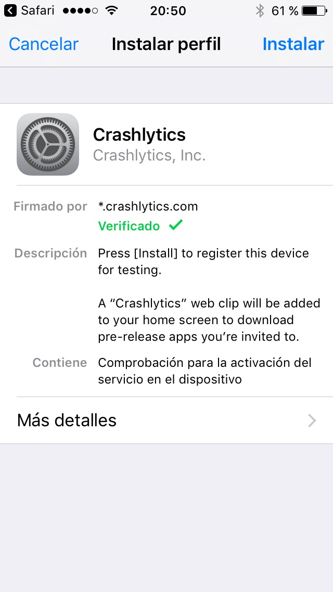
Si el dispositivo puede ejecutar la app aparecerá un botón para instalarla. La forma de instalarla será tan sencilla como pulsar ese botón (no hay necesidad de usar iTunes ni Xcode).
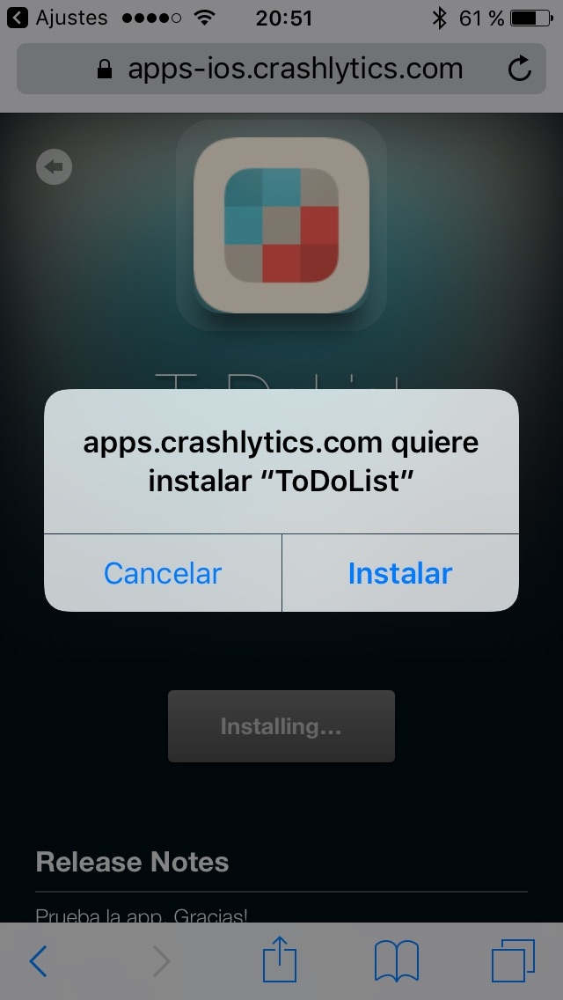

Si el dispositivo no puede ejecutar la app, aparecerá un mensaje indicándolo y nos informará del UUID.
Dashboard de Fabric¶
En el dashboard (https:/fabric.io) podemos acceder a estadísticas de descargas e instalaciones, información sobre los crashes de nuestra apps, etc.
También podemos invitar nuevos probadores y crear un enlace desde el que es posible instalar la app. Cuando se pulsa en el enlace se accede a una página en la que se pide el e-mail de la persona que va a probar la app.
Test Flight¶
Distribución de apps¶
El proceso de distribución de apps en el App Store es el siguiente:

App Store Connect¶
App Store Connect es el servicio de Apple con el que los desarrolladores pueden organizar:
- Todas sus apps para poder enviar a prueba versiones beta y subirlas al App Store.
- Toda la información legal y de impuestos.
- Información sobre el estado de los productos, retroalimentación e información de descargas, ventas y ganancias.
La plataforma está accesible desde el member center en los programas de pago. No está disponible en el programa de universidad.
También se puede acceder desde la URL https://appstoreconnect.apple.com.
Nota
Hasta el año pasado (2018) iTunes Connect era la plataforma única a la que se subían todos los productos para su distribución (apps, ebooks, podcasts, música). A mediados del 2018 Apple divide en dos esa plataforma, creando App Store Connect para gestionar únicamente apps.
Hemos conservado algunas imágnes del curso pasado en el caso en sean muy similares a las actuales. En estas imágenes aparece la cabecera iTunes Connect en lugar de App Store Connect.
Pasos para subir una app al App Store desde App Store Connect¶
- Crear un registro en App Store Connect, un identificador único para el app.
- Subir una compilación de la app.
- Pruebas Beta: probar la app con usuarios de la organización o usuarios invitados, usando Test Flight.
- Completar toda la información y enviar la app a revisión de la App Store.
- Una vez que ha superado la revisión, la app se pone a la venta en la App Store.
- Analizar analíticas de la app (de ventas, de uso, etc.) y desarrollar una nueva versión.
Añadir información de la App¶
Antes de subir una app a App Store Connect, hay que crear un registro de la misma indicando un identificador único (SKU) que puede ser el propio bundle ID y seleccionando el App ID.

Subir una compilación de la app¶
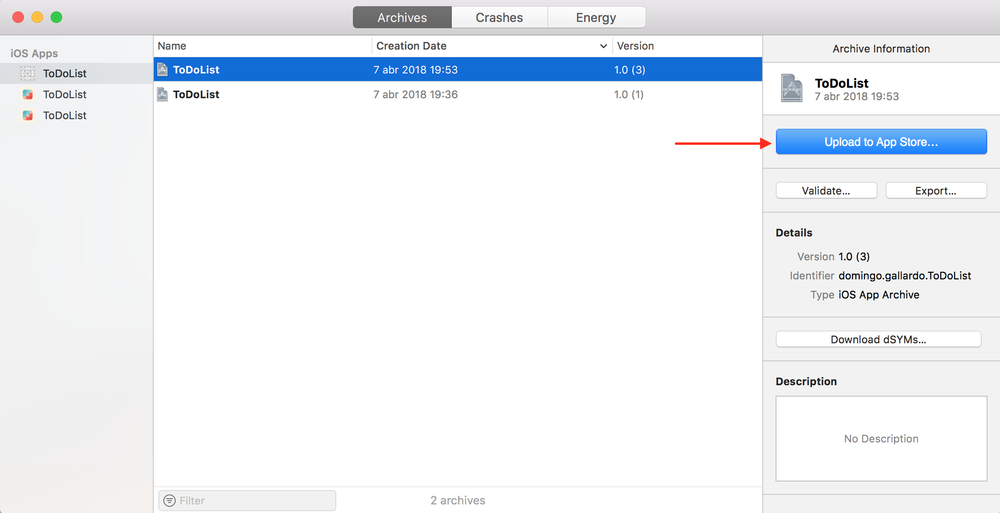
La forma más sencilla de subir una app a App Store Connect es utilizando Xcode.
Debes crear un archivo ipa con la opción Product > Archive y seleccionar la opción Upload to App Store.
Es posible subir distintos builds y gestionarlos todos desde App Store Connect. El identificador de la app es su bundle id.
Diseño de la página en el App Store¶
En el App Store se muestra distinta información sobre la app. Es importante diseñar bien esta página para que sea atractiva para los usuarios y estén interesados en descargar la app.

App Store Connect se usa para gestionar estos los elementos necesarios para crear la página de la app en el App Store: nombre de la App, iconos, previsualizaciones (pantallas y vídeos), descripción, novedades, palabras claves y categorías.

Nuevos usuarios App Store Connect¶
Es posible añadir usuarios a la cuenta de App Store Connect. Son usuarios que van a poder trabajar con las apps subidas, realizando funciones limitadas por su función.
No es necesario tener una cuenta de organización para poder añadir usuarios colaboradores en App Store Connect. Es posible en cuentas de desarrollador individual.
Los usuarios añadidos podrán ser probadores internos en TestFlight.
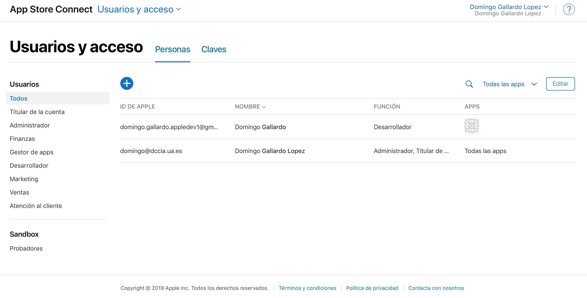
TestFlight¶

TestFlight es una plataforma integrada en App Store Connect que permite distribuir versiones beta de apps a probadores.
Es posible distribuir la app hasta 25 probadores internos (seleccionados de entre los usuarios de la cuenta de App Store Connect) y hasta 10.000 probadores externos.
Los usuarios de prueba deben descargarse la app TestFlight con la que gestionarán la descarga de las pruebas en sus dispositivos.
Aprobación de pruebas externas¶

Una vez subida a App Store Connect la app entra automáticamente en un proceso de aprobación para que se pueda distribuir externamente una versión beta en TestFlight.
La aprobación suele tardar menos de 1 día la primera compilación y ser casi instantánea cada nueva compilación que se sube.
No es necesaria aprobación para la distribución de pruebas internas.
TestFlight en App Store Connect¶

Demo¶
Vamos a comprobar el funcionamiento de TestFlight, subiendo la app ToDoList, añadiendo probadores y comprobando la instalación de la app en los probadores.
Registro de una app en App Store Connect¶
Registramos la app en App Store Connect.

Subida a App Store Connect con Xcode¶
Una vez creado el registro de la app ya es posible subirla desde Xcode.

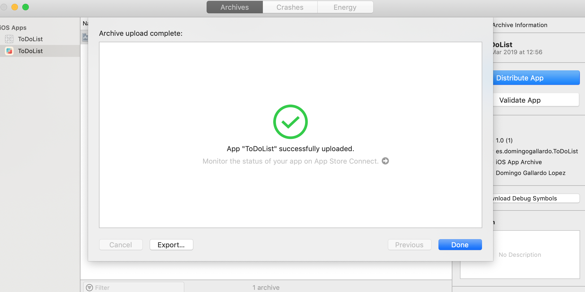
Compilaciones listas para probar¶
Una vez que se ha subido a App Store Connect y ha pasado un tiempo necesario para que la plataforma prueba que la app puede ser distribuida para pruebas, aparecerá con un indicador verde lista para probar.
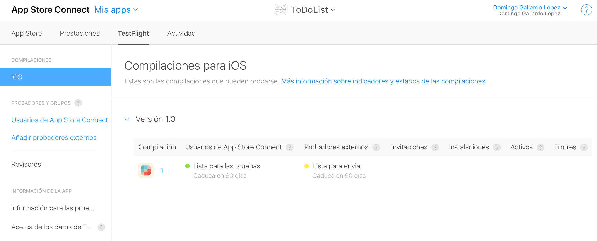
Los números de versión y de compilación (build) son los definidos en Xcode.
Ahora la app está lista para que sea probada por los usuarios de prueba internos. Podemos seleccionar la compilación a distribuir.
Añadir probadores externos y enlace de prueba¶
Podemos también añadir usuarios de prueba externos y un enlace de prueba que puede ser usado por cualquiera. Para ello es necesario crear un grupo de prueba y volver a solicitar una autorización de envío a pruebas de la app.
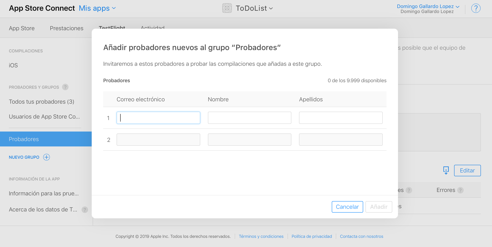
Debe pasar un tiempo para App Store Connect apruebe la distribución de prueba. Mientras tanto la compilación seleccionada aparecerá en estado Pendiente de revisión.

Una vez aprobada la distribución es posible crear un enlace para que cualquiera la pueda instalar y probar.

TestFlight en los usuarios¶
Los usuarios de prueba reciben un correo avisándoles de que la beta está disponible.

Deben instalar la app TestFlight y en la app aparecerá un botón que permitirá instalar la app en el dispositivo.
En este caso no es necesario que el dispositivo esté en la lista incluida en el perfil de aprovisionamiento, porque la app está autorizada por Apple para su ejecución en cualquier dispositivo.


Nuevas compilaciones¶
Cuando subimos desde Xcode una nueva compilación, debemos entrar en el enlace de la compilación para activar la nueva prueba.
TestFlight enviará una notificación automáticamente a todos los usuarios para que descarguen la nueva versión.
Prácticas¶
En las prácticas de esta sesión deberás trabajar con distintos aspectos relacionados con la firma, la distribución y el despliegue de apps en dispositivos reales.
Resumimos a continuación lo que debes realizar:
- Firmar una app con tu cuenta gratuita e instalarla en un dispositivo configurado como dispositivo de desarrollo.
- Darte de alta en el equipo de desarrollo de la UA y firmar la app usando un perfil de aprovisionamiento que te permite instalarla en cualquier dispositivo autorizado en el perfil.
- Distribuir esta app firmada con el perfil de aprovisionamiento del equipo de la UA usando Fabric.
Creación de la cuenta de desarrollador Apple¶
Deberás crear un Apple ID introduciendo tus datos en este enlace. Este Apple ID será el que se asociará a la cuenta de desarrollador.
Activa la autenticación de doble factor de alguna de las formas definida en este enlace.
Después deberás darte de alta como desarrollador Apple con el Apple ID recién creado en https://developer.apple.com/register/.
De esta forma estás accediendo al programa gratuito. Este programa permite acceder a las herramientas de desarrollo, la documentación y acceso limitado a ciertas capacidades (incluido probar aplicaciones en dispositivos conectados a Xcode).
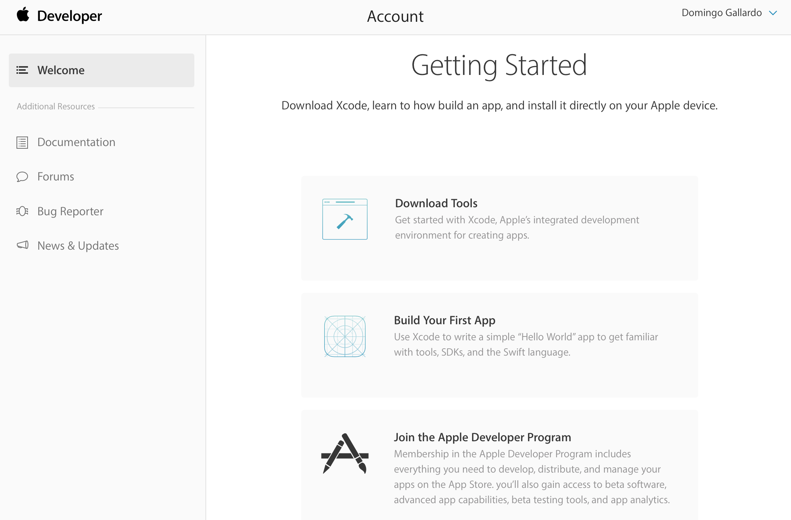
Explora las distintas opciones que permite la cuenta:
- Documentation
- Downloads
- Forums
- Bug reporter
- Help
Firma e instalación de una app en un dispositivo de desarrollo¶
- Descarga la app ToDoList.
- Incluye tu nombre en alguna parte de la interfaz de usuario.
- Fírmala con tu cuenta gratuita de desarrollador Apple (no la del equipo de la UA).
- Instálala en un dispositivo de desarrollo conectado a Xcode y prueba que funciona correctamente.
- Haz una foto y guárdala como documentación.
Configuración de la cuenta de desarrollador¶
Para la inscripción en el equipo de desarrollo de la universidad escribe tu nombre, apellidos y dirección de e-mail en este fichero Google Docs.
Una vez que te añadamos al equipo de la UA recibirás en el correo electrónico un mensaje con un código de invitación. Pincha en él e introduce allí tu Apple ID.
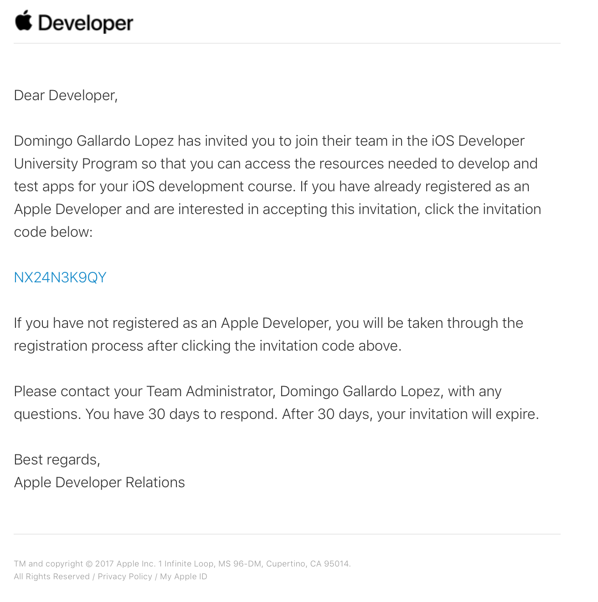
Una vez aceptada la invitación podemos entrar en el member center, comprobar que ya estás en el programa y probar las distintas opciones disponibles.
Firma y despliegue de app con perfil de aprovisionamiento¶
Debes seguir los pasos realizados en la demostración con la app
ToDoList.
- Nos damos de alta al equipo de la universidad.
- Compilamos la app, añadimos las capacidades necesarias y la firmamos con la cuenta del equipo.
- Exportamos el fichero .ipa compilado de la app.
- Instalamos y ejecutamos la app en un dispositivo de prueba.
Distribución con Fabric¶
- Distribuye la app al profesor (
domingo.gallardo@ua.es) usando Fabric. - Captura la pantalla de la web de fabric en la que se muestra que el profesor ha instalado la app.
- Crea una nueva versión de la app en la que el usuario pueda provocar un crash (consulta cómo hacerlo en la documentación de Crashlytics). Distribúyela al profesor y captura la pantalla en la que se muestra el número de crashes producidos.
Entregas¶
Resumen de las prácticas a realizar en esta sesión y entregas a realizar en Moodle.
- Descarga la app ToDoList (o usa una app tuya que hayas desarrollado) y fírmala con tu cuenta gratuita de desarrollador Apple (no la del equipo de la UA). Modifica la app para que aparezca tu nombre en la interfaz de usuario. Instálala en un dispositivo de desarrollo de Xcode y prueba que funciona correctamente. Haz una foto y guárdala como documentación.
- Firma la app con tu cuenta del equipo de la UA, activa el servicio de Game Center e instálala en otro dispositivo del profesor que esté dado de alta en el perfil de aprovisionamiento, pero que no sea el dispositivo de desarrollo de Xcode. Instala la app usando Apple Configurator 2. Haz una foto y guárdala como documentación.
- Distribuye la app al profesor (
domingo.gallardo@ua.es) usando Fabric. Captura la pantalla de la web de fabric en la que se muestra que el profesor ha instalado la app. - Crea una nueva versión de la app en la que el usuario pueda provocar un crash (consulta cómo hacerlo en la documentación de Crashlytics). Distribúyela al profesor y captura la pantalla en la que se muestra el número de crashes producidos.
- Guarda las fotografías y pantallas en una carpeta, junto con el binario .ipa de la actividad 2, comprime la carpeta y entrégala en la actividad de Moodle Entrega 1.